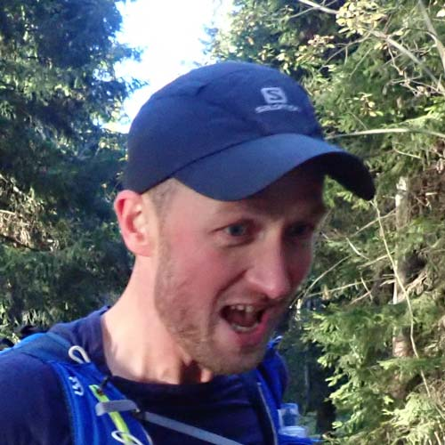
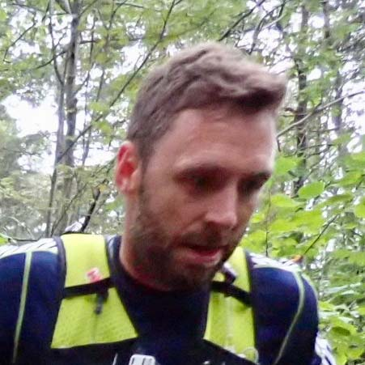
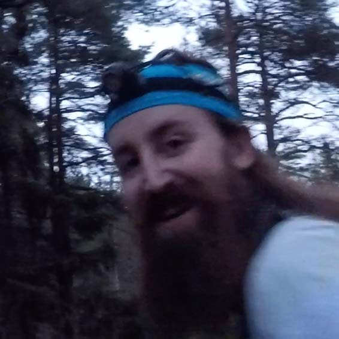

Er det Stirsdag idag?
Hva er Stirsdag?
Kort oppsummert er Stirsdag tirsdagstreninga til Sky Blazers hvor alle er velkomne. Vi møtes ved trikkestoppet på Disen, tirsdager kl. 18:00 og løper opp Grefsenkollen og videre inn i marka før vi ender opp på trikkestasjonen på Kjelsås.
Etterpå tar vi trikken nedover mot Løkka hvor vi tar en matbit og en øl/brus. Høres det fett ut, så bli med!
Fortsatt ikke 100% solgt? Hr. Rummelhoff har forfattet en litt mer utdypende tekst om Stirsdag her.
Vær og utstyr
| Plagg/utstyr | God idé? |
|---|
Hvem står bak Stirsdag?
Stirsdag er et initiativ av løpecrewet Sky Blazers. Vi består av ca 10stk kvinner og menn som rett og slett elsker å løpe og konkurrere i røfft terreng. Flesteparten av oss holder til i Oslo-området. "Sky" kommer av at vi digger skyrunning. "Less cloud, more sky!", som de sier på fagspråket.
Du finner oss i disse kanalene:
- Facebook: @skyblazersrunning
- Instagram: @skyblazersrunning
- Strava: @skyblazers
- Medium: @skyblazers
Hørt på Stirsdag
Ser du deg selv? Trykk på bildet, ta screenshot og del med venner!
-

Stirsdag er den nye lørdag!
- Bjørnar, Stirsdag 23.06.2017 -

Det dumme med Stirsdag er at man ser så jævla treig ut på Strava.
- Markus, Stirsdag 11.10.2017 -
Stirsdag er som Fight Club, bare uten slåssinga.
- Hans Kristian, Stirsdag 05.10.2017 -
Jeg er bare her for øl og burger
- Phuong, Stirsdag 08.08.2017 -

Jeg må få meg ny jobb så jeg kan være med på hver Stirsdag.
- Stein Ove, Stirsdag 11.10.2017
Vi løpes!
Hilsen Sky Blazers & Co.